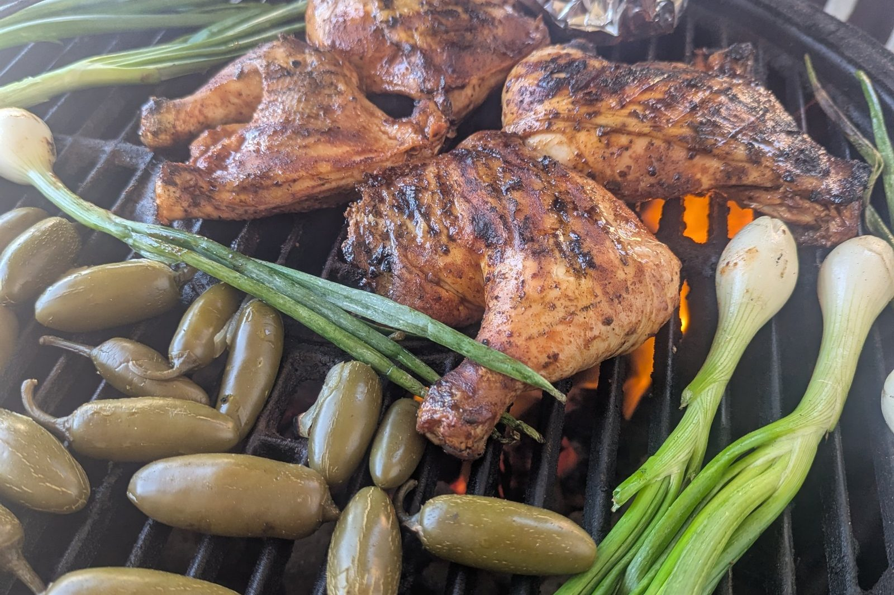

Every Taco I Know Had a Teacher
Appreciation · Road to Kisumu
I am taking tacos to Kisumu. Before I do, I owe a few people their names. The first tacos I knew had shells that came out of a box. The yellow store bought shells, already shaped and ready to fill. Ground beef, shredded cheese, lettuce, salsa, sour cream. You built your own at the table, reaching for whatever you wanted, trying to get everything inside that little shell without breaking it. Which, of course, you did break a couple every time. We called them Black People Tacos. If you grew up eating them, you know exactly what I mean. There is no explanation needed. They were familiar, affordable, easy to put together, and good enough to make you look forward to Tuesday night dinner. They were the tacos I knew, and for a long time, I never thought there was anything more to know.
As I got older and spent more time around food, I started hearing a different conversation. The real taco, people said, was a soft corn tortilla with meat straight off the grill. The hard shell was the American version, the commercial version, the one that had somehow lost its way. I accepted that distinction without giving it much thought. I had learned to cook by watching, tasting, asking questions, and standing close enough to people who knew more than I did, but somewhere along the way, I had accepted the idea that one kind of taco was legitimate and another was something less. The more I learned, the less sense that made.
A California cookbook was already describing fried tacos in 1914, when Bertha Haffner Ginger published her California Mexican-Spanish Cookbook. In 1950, Juvencio Maldonado, a New York restaurant owner originally from Oaxaca, received a patent for a form designed to fry tortillas into taco shells. Then there is Glen Bell, the man behind Taco Bell, who started out in San Bernardino. The hard shell he sold was his simpler take on the tacos dorados Lucia and Salvador Rodriguez were frying at the Mitla Cafe across the street.
The history is more complicated than a box of yellow shells might suggest. Mexican American cooks were making and adapting fried tacos long before the drive thru turned them into a national staple. That matters to me because food has a way of losing its history as it travels. A dish moves from one kitchen to another, changes a little along the way, finds a new audience, and eventually arrives somewhere that nobody remembers where it started.
By the time those shells reached my mom's kitchen, they were simply dinner. By the time they reached my plate, they were mine, too. Not because I invented them. Not because I knew their history. Because somebody made them for me, and I grew up eating them. That is how food becomes part of a family.
Then came the lessons off the grill. The second taco I learned about never came out of a box. It came off of a grill. In the early 2000s, growing up around Oakland, I got to experience another side of tacos through the people in my neighborhood. There was something about the way food moved around those grills that stayed with me. Meat came off the fire, somebody laid it on a tortilla, and the next thing you knew, you were eating. No speech. No lesson on authenticity. Nobody needed to explain what made it a taco. The meat was hot, the tortilla was warm, and you ate it while it was ready.
At the time, I was just a young man around people cooking. I wasn't thinking about culinary traditions or the history of Mexican American food. I was watching people do what they knew how to do, the same way a young cook watches an experienced one work a station. You notice things without realizing you are taking notes. You watch when something goes onto the fire, how long it stays there, what gets cooked alongside it, and when somebody decides it is ready. You learn that a good cook doesn't always need to explain what they are doing. Sometimes you have to stand there long enough to understand it for yourself.
Years later, when I became a pitmaster, I could recognize how much of my cooking had been shaped by those early experiences. The fire had become familiar. Cooking outside had become second nature. And the simple idea of taking something hot off the grill and putting it straight onto a tortilla made perfect sense to me. That is one of the things I love about cooking. You can spend years learning techniques, studying ingredients, and refining your craft, but some of the lessons that stay with you longest come from people who never thought they were teaching you anything.
Maria's mother taught me something similar. I have written about her before, and I still think about the way she worked with maize. Some days, she ground it the traditional way. Other days, she used flour from a bag. She did not seem to feel the need to prove anything by choosing one method over the other. At the time, I didn't fully appreciate what that meant. Now I understand that she was showing me something important. Tradition doesn't have to be fragile. A cook can respect the old ways without pretending that convenience has no place in the kitchen. You can know where a dish comes from and still make it work with what you have.
The same lesson was waiting for me at those neighborhood grills. A taco is not an examination. You don't pass or fail it based on whether somebody else approves of your tortilla. There is history to respect, certainly, and there are traditions worth learning properly, but food is also something people make, share, adapt, and carry forward. I have spent enough years in kitchens to know that the people who teach you the most are not always the people standing at the front of a classroom. Sometimes they are standing beside a grill, handing you something to eat.
Here is what I owe the people who taught me. I am a Black American chef preparing to move to Kisumu, Kenya, and open a bar and grill. Tacos are going on that menu. I haven't decided whether they will be soft, hard, or both. I know there will be meat over fire, fresh chiles, onions, limes, and the kind of cooking that makes people gather around before the food is even ready. What I have decided is that I need to be honest about where this food comes from.
I cannot take tacos halfway around the world and present them as something I discovered. I cannot pretend that being good at cooking something makes its history mine. And I don't want to dismiss the food I grew up eating simply because I have learned more about the traditions behind it. There is room for all of it. There is room for the Rodriguez family's tacos dorados and the history of Mexican American cooks who shaped the food we recognize today. There is room for Juvencio Maldonado, who patented a way to fry a tortilla into a shell. There is room for the people who developed techniques, adapted recipes, and built businesses around the dishes they knew. There is room for the parents who bought a box of shells at the grocery store and turned it into dinner for their family, and there is room for the neighbors who put meat on a tortilla and handed it to me without making a big deal about it. There is room for Maria's mother, who showed me that respecting tradition does not mean refusing to adapt.
Those people gave me more than something to eat. They gave me experiences that became part of the cook I am today. I think about that now because opening a restaurant in Kisumu means bringing together things I have learned from different places, different kitchens, and different people. I will be cooking for people who have their own food traditions, their own memories, and their own understanding of what belongs on a plate. I want to bring my experience to that table without pretending it exists in isolation.
That means knowing what I am serving, understanding where it came from, and giving credit where credit is due. It also means allowing food to be what it has always been, something that moves between people and places, gathering new stories without having to erase the old ones.
Now back to the fire. Last weekend, I cooked a spread that felt familiar in the best possible way. Chicken quarters and carne asada went over the coals. Jalapeños rolled across the grate until their skins blistered. Cebollitas sat over the heat, their white ends beginning to char while the green tops softened. A foil packet of corn tortillas rested off to the side, doing its own quiet work. It was the kind of cooking that makes you slow down and pay attention. Fire does not care how hungry you are or what time you promised to have dinner ready. You learn to work with it, watch the food, and know when to move something closer to the heat or pull it away.
When the meat was ready, I didn't need to turn it into a complicated presentation. I took it off the fire, put it on a tortilla, and served it, and standing there, I thought about how much of what I know came to me that way. Someone cooked in front of me. Someone handed me food. Someone let me stand close enough to watch. Years later, I was doing those same things in my own way, carrying lessons forward without always remembering exactly when I had learned them. That is the part of cooking I never want to lose.
Recipes matter. Technique matters. History matters. But so do the people who feed us before we know enough to ask questions, the neighbors who open their grills to us, and the cooks who show us that there is more than one way to make something worth eating. My mom's tacos came out of a box. The tacos I learned around Oakland came off a grill. Both belong to my story.
When I take tacos to Kisumu, I will be carrying more than a menu item. I'll be carrying a little bit of every kitchen that helped make me the cook I am. Every taco I know had a teacher. Some of them just never knew they were teaching me.
— Chef Dumela